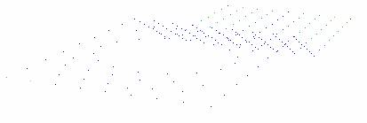

Display Modes
VCollab Presenter offers different types of display modes for viewing a model..
DisplayMode in Context Menu
The various Display options available are explained below
| Shaded (default) | Smoothly shaded surfaces. |
| Shaded Mesh | Smoothly shaded surfaces and Mesh. |
| Wire Frame | Pure wireframe model with line sets. |
| Hidden Line | Wireframe model with hidden line removal. |
| Points | Model with the set of colored point sets. |
| Transparent | Users can edit transparency percentage using Transparency option in Edit | Options dialog |
Shaded Mesh Color
- Default mesh color is black. Users can modify it using Shaded Mesh Color | User Color.
- Shaded Mesh Color | Palette Color option sets contour color to the mesh.
Feature Edges

The various Feature Edge options available are explained below.
| Show Edges | Shows Feature Edges |
| Edge Only | Displays model only with feature edges. |
| Color | Allows user to set edge color with either palette color or with user color. User can display the edges with transparency too. |
| Line Size | Allows user to select the edge pixel size from 1 to 5. |
| Regenerate | Allows user to change crease angle and regenerate feature edges. |
| Shared Edges | Allows user to show or hide the edges which are shared between parts. |
Steps to change display mode
- Go to Display Mode submenu from the Viewer Context menu.
- Click the appropriate mode to change.
- Enable Axis option to show Axis or Triad.
- Enable Full Screen option to view in Full Screen mode.
- Line Size option is applicable for Line Set data only.
- If the model contains any line set data, users can use Line Size option to view them in different sizes.
| Smoothly shaded with contour surfaces |  |
| Shaded Mesh | |
| Wireframe model with line sets | |
| Wire Frame Model with hidden line removal |  |
| Model with set of point sets |  |
| Smoothly shaded surfaces with 50% transparency |  |